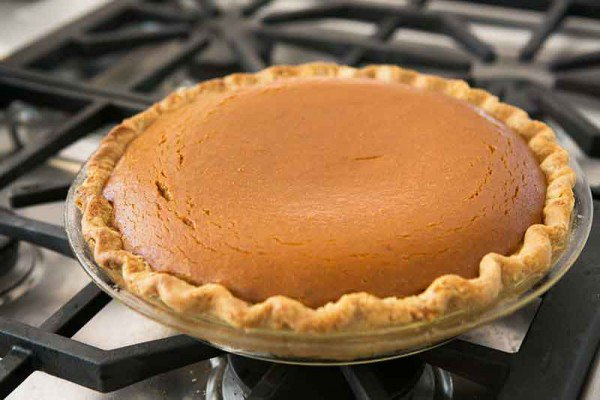

PERFECT ROASTED TURKEY

4 hours and 30 mins
Recipe Preparation Place salt and brown sugar in a medium bowl and work together with your fingers until incorporated. Place turkey on a wire rack set inside a rimmed baking sheet. (If you don't have this setup, place your turkey on a V-shape rack set inside a large roasting pan.) Sprinkle dry brine all over outside and inside of turkey, patting to adhere and nudging some into crevices. You won't need all of the dry brine, but it’s good to have extra since some of it will end up on the baking sheet as you season the turkey. Chill bird, uncovered, at least 12 hours and up to 2 days. Remove turkey from wire rack and rinse baking sheet and rack if needed (turkey will most likely release some liquid onto pan). Line baking sheet with 3 layers of foil and set rack back inside. Place turkey, breast side up, on rack and tuck wings underneath. Let turkey sit at room temperature for around 3 hours. Place an oven rack in middle of oven; preheat to 450. Using your fingers, loosen skin on breast. Work 4 Tbsp. butter under skin, spreading evenly over both breasts. Smear outside of turkey with another 4 Tbsp. butter. Tie legs together with kitchen twine and pour 1 cup water into baking sheet.Roast turkey, rotating pan halfway through, until skin is mostly golden brown all over, about 30 minutes. Meanwhile, cook vinegar, honey, Worcestershire sauce, rosemary, garlic, orange zest, and remaining 4 Tbsp. butter in a small saucepan over medium heat until bubbling and slightly thickened, about 5 minutes. Reduce heat to lowest setting and keep glaze warm. Reduce oven temperature to 300 and continue to roast turkey, brushing with glaze every 30 minutes and adding more water by ½-cupfuls as needed to maintain some liquid in baking sheet, until an instant-read thermometer inserted into the thickest part of breast near the neck registers 150 (don't worry; the temperature will continue to climb while the bird rests), 65-85 minutes longer. Skin should be deep golden brown, shiny, and crisp. Transfer turkey to a cutting board and let rest at least 30 minutes and up to 1 hour before carving.
/holiday-stuffing-3736-5793e7195f9b58173be40314.jpg)
TRADITIONAL BAKED STUFFING
20 mins
Melt butter in 4-quart Dutch oven over medium-high heat. Cook celery and onion in butter 6 to 8 minutes, stirring occasionally, until tender. Remove Dutch oven from the heat. Gently toss celery mixture and remaining ingredients, using spoon, until bread cubes are evenly coated. Use to stuff one 10- to 12-pound turkey. Or to bake stuffing separately, grease 3-quart casserole or rectangular baking dish, 13x9x2 inches. Place stuffing in casserole or baking dish. Cover with lid or aluminum foil and bake at 325°F for 30 minutes; uncover and bake 15 minutes longer.
CRANBERRY SAUCE

20 mins
Empty a 12-ounce bag of fresh or frozen cranberries into a saucepan and transfer 1/2 cup to a small bowl. Add 1 cup sugar, 1 strip orange or lemon zest and 2 tablespoons water to the pan and cook over low heat, stirring occasionally, until the sugar dissolves and the cranberries are soft, about 10 minutes. Increase the heat to medium and cook until the cranberries burst, about 12 minutes. Reduce the heat to low and stir in the reserved cranberries. Add sugar, salt and pepper to taste and cool to room temperature before serving.
PUMPKIN PIE
20 mins